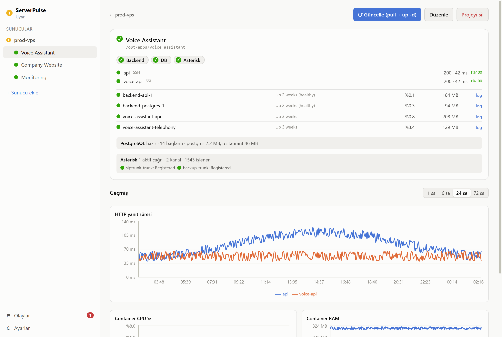
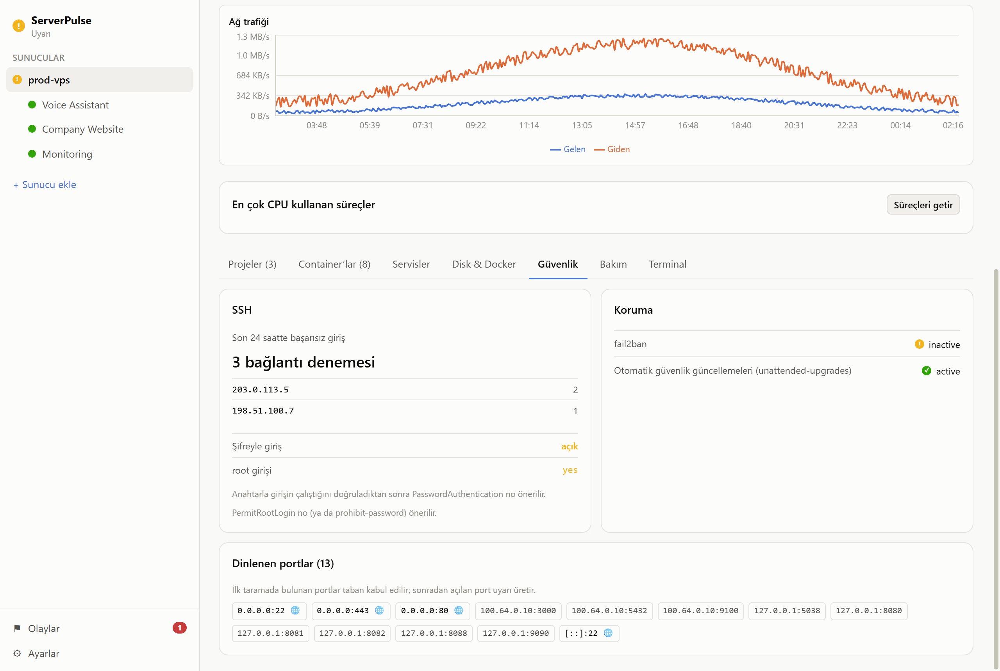
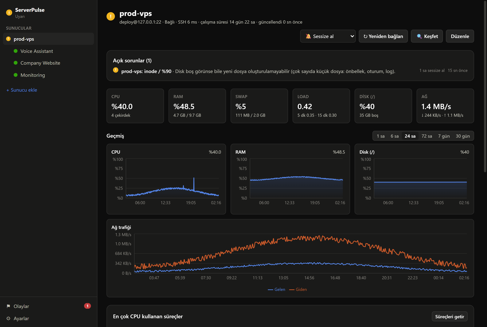
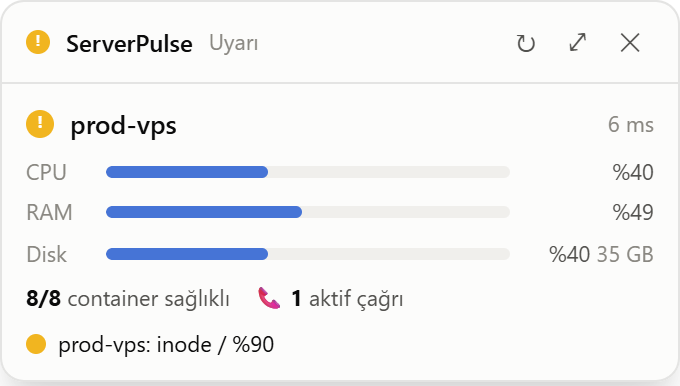

Neler yapıyor?
SSH ile bağlanır, salt okunur komutları çalıştırır, çıktıyı bilgisayarınızda işler.
Agentless
Sunucuda kalıcı süreç yok. Loglar yalnızca son 200 satır okunur, asla takip edilmez.
Widget ve tray
Sağ altta CPU/RAM/disk ve "8/8 container sağlıklı" özeti. Tray ikonu en kötü duruma göre renk değiştirir.
Proje kartları
Backend, Frontend, DB rozetleri, HTTP yanıt süresi, uptime, SSL bitişine kalan gün, container kaynak kullanımı.
Grafikler
CPU, RAM, disk ve ağ grafikleri 1 saatten 30 güne kadar. Yerel SQLite, isteğe bağlı Prometheus.
Uyarılar
Durum değişince masaüstü bildirimi. İsterseniz Telegram ve webhook'a da gider.
Güvenlik sekmesi
Başarısız SSH girişleri ve servis logları tek yerde.
Asterisk (isteğe bağlı)
VoIP sunucuları için aktif çağrılar ve SIP trunk durumu; trunk düşünce uyarı.
Türkçe ve İngilizce
Açık ve koyu tema. Windows (x64) ve macOS (Apple Silicon).
Ekran görüntüleri
Proje görünümü, güvenlik sekmesi, koyu tema ve widget.




İndir ve başla
Windows kurulum dosyası Releases sayfasında. Kurulu sürüm yeni sürümleri kendisi indirir.
İmzasız olduğu için Windows SmartScreen uyarı verebilir: "Ek bilgi" → "Yine de çalıştır". macOS'ta ilk açılışta sağ tık → Aç.
git clone https://github.com/tanjavaner/serverpulse cd serverpulse npm install npm run dev